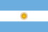
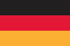

Commence ici
Du numéro au nom
Avec le numéro de maillot, trouve le joueur parmi 4 choix.
Quiz d’effectifs de foot · iPhone et Android
Qui porte le numéro 7 ? Apprends les effectifs de tous les clubs du top 5 européen et de plus de 150 sélections en parties rapides, puis vois qui tu as raté.
À toi de jouer · Niveau 1
Voilà comment on joue dans l’appli : un numéro de maillot et quelques indices, puis tu choisis le joueur. Trois questions ici ; dans l’appli, dix par partie, avec l’équipe de ton choix.

Espagne
Niveau 1
Score : 0 sur 0
Nom : à trouver. Poste : Attaquant. Âge : 19. Club : Barcelona.
Qui porte le 19 ?
Choisis ta réponse
Crédits photo · 3
Ces photos sont chargées depuis Wikimedia Commons. Comme tout site web, Wikimedia reçoit donc ton adresse IP et les détails de chaque requête.
Les paliers
Commence ici
Avec le numéro de maillot, trouve le joueur parmi 4 choix.
Verrouillé : 8 sur 10 au niveau 1
Le nom, puis le poste : GB, DÉF, MIL ou ATT.
Verrouillé : 8 sur 10 au niveau 2
Le nom parmi 6 choix, puis le poste, puis la nationalité, ou le club pour une sélection.
Chaque question compte pour un point. Aux niveaux 2 et 3, tu ne marques le point que si tu réussis chaque étape : pas de point partiel.
Résultats et Effectif
Après chaque partie, l’écran de résultats présente chaque joueur raté sur une carte. Fais-les défiler pour les revoir avant la partie suivante.
L’écran Effectif affiche toute l’équipe en cartes ou en liste. Appuie sur « Cacher noms » pour te tester.
Crédits photo · 3
Ces photos sont chargées depuis Wikimedia Commons. Comme tout site web, Wikimedia reçoit donc ton adresse IP et les détails de chaque requête.
Au programme
Tous les clubs des cinq grands championnats européens.
Des six confédérations.
English, Español, Français, Italiano et Deutsch.
 Espagne
Espagne
Argentine Brésil
Brésil
Allemagne États-Unis
États-Unis Ghana
GhanaDix sur dix
A la escuadra
En espagnol, une frappe en pleine lucarne. Fais dix sur dix et Escuadra te le dit.
Partage ensuite ta partie en image ou en texte. Sans photo ni nom : tes amis peuvent quand même y jouer.
Pensé pour des sessions courtes
Aucune inscription, rien qui te ralentit. Ouvre l’appli et joue.
Tous les effectifs sont enregistrés sur ton téléphone. Les photos se chargent depuis Wikimedia Commons quand tu es en ligne ; sinon, les couleurs de l’équipe les remplacent.
Des photos de joueurs issues de Wikimedia Commons, quand il en existe une, chacune avec son auteur et sa licence.
English, Español, Français, Italiano et Deutsch. L’appli suit la langue de ton téléphone, ou tu peux en choisir une dans Réglages.
L’appli suit l’apparence de ton téléphone, ou tu choisis toi-même.
Escuadra envoie des statistiques d’utilisation anonymes, sauf si tu les désactives dans Réglages. La politique de confidentialité détaille tout ce qui quitte ton appareil.
Escuadra est disponible sur iPhone et Android.


.jpg){kind=link}
.jpg){kind=link}
.jpg){kind=link}